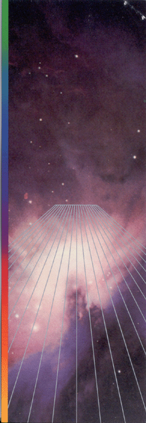
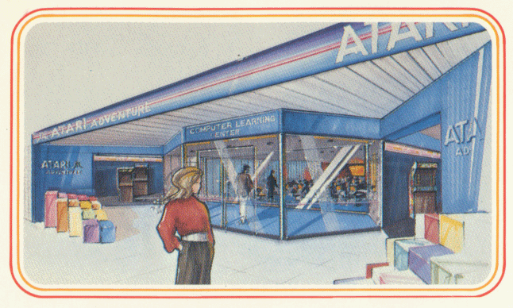
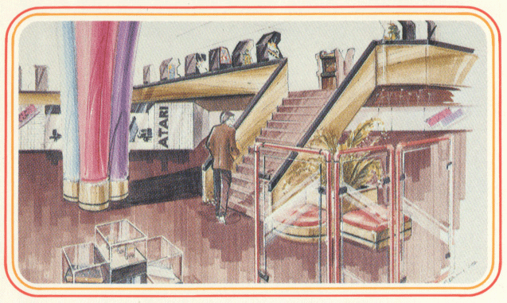
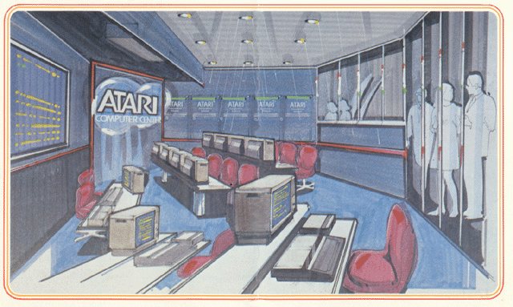
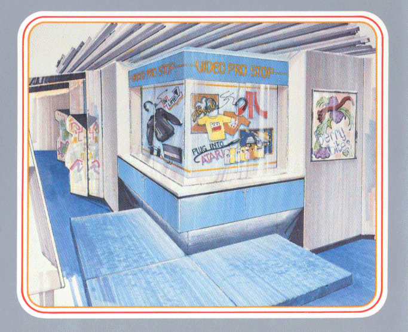
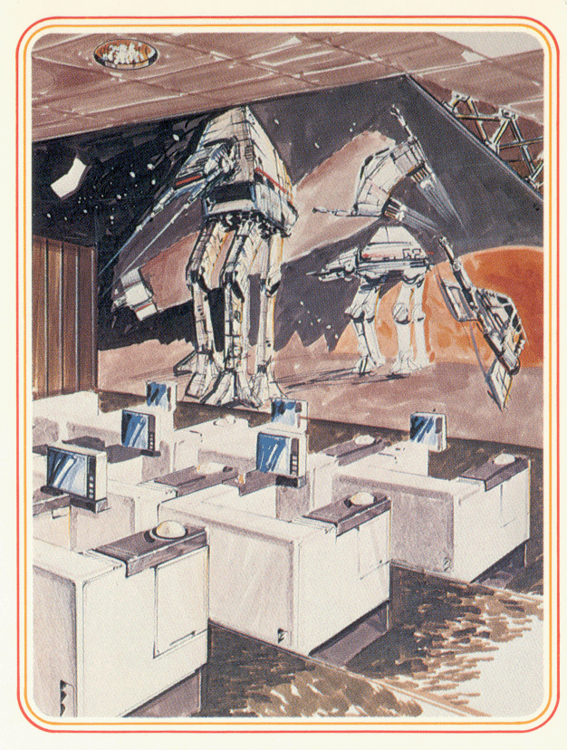
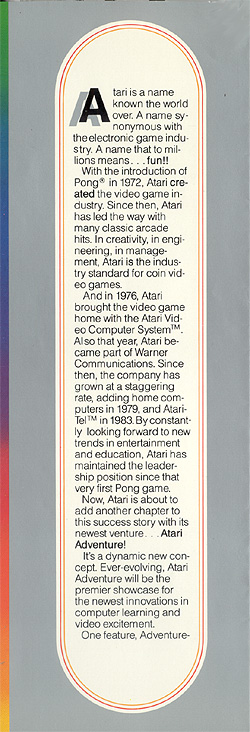
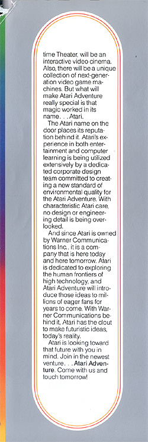

|

|
ATARI VIDEO ADVENTURE AT MARRIOTT'S GREAT AMERICA
- 1982  Visitors to Marriott's Great America theme park in Santa Clara, California had a memorable computer experience awaiting them, thanks to Atari. Atari launched its three-phase attraction at the park in 1982, featuring an arcade with all the latest coin video releases and a store with every Atari game and accessory.  When the final phase of the Atari center at Great America had opened, it was a real treat -- a computer-interactive stimulation for the eyes, the ears, and the mind. As visitors enter the Atari Video Adventure, they experience a "video kaleidoscope"- a carefully orchestrated montage of sound and images demonstrating the role of the computer in human life.  The announcer's voice fills the room -"Today, we play at the speed of thought - discover magical kingdoms - test our powers over time and space. Our play becomes our work, and our work becomes play." From here we progress to Computer Painting, where visitors get hands-on experience creating mind-boggling computer artwork with very simple controls. Intriguing sounds beckon us on from around the corner and we follow them to enter a Tone Tunnel. Rows of pillars line the tunnel. Each one you touch creates a different musical sound. With dozens of people walking through this environment, touching pillars and creating different tones, you might expect the result would be nothing but noise. But amazingly enough, this ingeniously designed tunnel produces captivating music out of whatever combination the many hands at the controls produce. The final attraction is a truly eye-opening extravaganza of color and movement.  Visitors stood before a wall-size screen and discover themselves on the wall - not as they ordinarily are, but as the computer recreates them. TV cameras take in a roomful of people at a glance, and feed the image to a computer which adds color, extends movement, distorts reality, and by doing so, creates a series of stunning computer graphic effects - and you are part of this creation! This dramatic demonstration of the computer's potential to create extraordinary sights and sounds will long be remembered by anyone lucky enough to visit the Atari Video Adventure at Great America.  |
|  | |
|  |